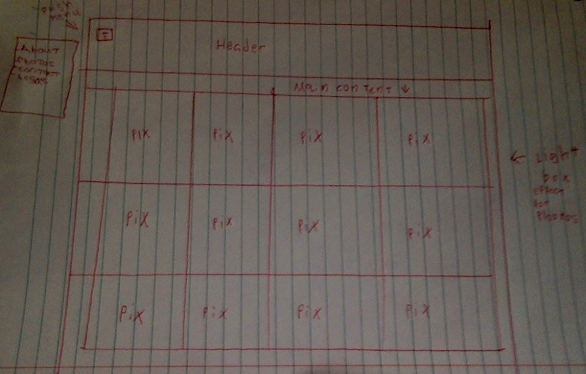

Time Habbits
Read
which timebox and habits techniques did you try?
In the past i have used the Fogg method. when i practicing tiny habits it was for almost exactly what he used as an example, for my health and fitness.
having watched his Ted talk i now see it would be a good idea to apply it much more broadly in more aspects of my life.
what did you find interesting?
I am pretty interested in timebox(ing?) in general. i thought that the pomoodoro technique is particularly interesting, or though i think 25 minutes is a little short for me.
What worked for you?
Well i can’t say for sure as i have only just learned about the vast majority of these techniques, but knowing myself the way i do i suspect a health combination of mindful tiny habits is at the very least a logical start point.
which will you experiment further with?
I’m most interested in putting more time into and paying closer attention to the Fogg method.
But i am also looking forward to becoming better with my mindful meditation.
Design to web
Read
What a responcive site is, and why responsiveness is important
Responsive webpage just means that it responds to a change in screen size and makes everything look nice no matter what you are viewing it on.
It's important as it mean you only need to create and mantain one website as opposed to many.
What mobile first design is and why it's important
Mobile first design is pretty much exactly what it sounds like. it just mean that you build your website for mobile before you ajust for desktops.
it's important as the vast majority of people are useing there mobile the majority of the time.
What are frameworks? and why do we use them?
A framework in web devalopment is just like the framework of a house, it lays out the basic foundation of the page so you don't have to start every page from nothing.
they are increbible usefull as they save hours of unnessary work.
What a wireframe is and why we use it
Think of the wireframe like a draft of what a webpage is going to look like. it helps you stay on track while building the page and gives you an idea of how everything should sit on the page.

The aspects i found difficult
My main problem was i was really intrested in having a push menu but wasn't able to use any javascript.
but i will implment it in the future.
The accessibility features i included
This website uses the role feature to lable all major section of the page. all images also include a alt feature to tell screen readers what the image is
The usability features i have used
This pasge uses a large navigation menu with well labled pages that can easly link back to the index page.
The colours have been chosen for there readability.
T7 Javascript Basics
Read
How does Javascript compare to HTML and CSS?
If we take my previous example of HTML being like the structure of a house and CSS being the furnishings, Javascript is like the people who live in and interact with the house.
It seems kind of illogical to compare them as they do completely different things.
they are all essential to any well rounded webpage, it’s kind of like comparing water and air, both very different and both essential.
Control flow and loops
Control flow is just the order different pieces of code are used in. For example when you need to go to work in the morning, you don’t just wake up and leave, there is a set of steps to follow. in Javascript that might look a little like this, function getReadyForWork() {
if (naked === true) { getDressed} else {go to the car} if (car.on = false) { start car} else (leave)}};.
obviously you might get ready for work in a more comprehensive way then me, but the idea is still the same.
loops are essentially the same only they process information over and over again until the have completed whatever they have set out to do. for example,
while (keys === lost) {
look for keys } or do { look for keys} while (keys === lost); .
The difference between accessing data from arrays andobject literals
There are a number of ways you can store data with Javascript, so logically there is also a number of was to access that information. An array stores many separate blocks of information in a linear fashion. for example, var someCode = [“something1”, “something2”, “something3”].
as you can imagine this can be accessed by asking for it by number (keeping in mind computers count from zero) i.e someCode[2] would be “something3”.
you can also store information in objects, an object is literally like a box that holds all of the information. you can put things in the box like var things = { “name” : “Ashley”}
get things out of the box like this console.log(things.name).
Waht are function? Why are they useful?
functions are just blocks of code you name and define. the are useful as they let you apply the same code in more then one place without having to write it over and over again.
What is the differences between functional and object oriented programming?
I have been reading about this all day and am unfortunately still really unclear on what the distinction is. i will have to get back to you when i can give a full answer.
C7 Motivation
Read
What are my core values?
I guess my core values are inclusiveness and equile opportunity.
so i would say i stand equality and social and technical devalopment.
I really liked the section on success, failure and resilience. the meditation excesise is also really interesting.
T5 Problem Solving
Read
Tell your non-tech friend a story about a time you…
Got blocked on a simple problem.
I was recently working on a challenge where i had to build a racer game using Javascript.
I was having trouble assigning the Q and P buttons to the movements of each player. after MUCH trial and error (mostly error) i am so sick of looking at the same problem for so many hour that i tried talking to other students about it but before i even finished explaining my problem it all became really obvious. I believe that it is referred to as the rubber ducky method. So I learned about the importance of talking about problems you encounter with other people.
Solved a problem in an elegant way.
Unfortunately having encountered many problems that i have solved after trying a few different things i would not by any stretch of the imagination call my solutions elegant. That being said i am getting much better at recognising the area that isn’t working correctly.
Reflect on how confident you feel using the problem solving techniques and process.
Psuedocode:
Or though i am pretty confident in my ability to psuedocode, i find i actually do very little of it. i find that working directly in the console useful for all the same reasons but i also get real time information if it actually works.
The Rubber Ducky Method.
I love the rubber method now. i had never used it up until last week but now i have seen the light.
I am looking forward to being able to do it more often once i arrive at EDA.
Reading error messages.
I obviously read all the error messages i come across, but i find most of the time the things they are telling me incredible ambiguous. so i would have to say, not that confident.
Console.logging
Console logging is great. I love being able to log everything in a broken block of code and see the point where everything stops working.
Googling.
Google has been my best friend the last 8 weeks. I find as long as you know what you are actually looking for google tends to have at least enough to point you in the right direction.
Asking your peers for help.
Also a good one! It’s like google only they actually care and they can look at the problem i am having and tailor the advice for me specifically.
Asking coaches for help.
I am very confident with this now. having Pete and Charles around were VERY useful in the early weeks. I have also found it useful that me and Charles have very similar sleeping patterns.
Improving your process with reflection.
In the early weeks of phase zero i really enjoyed doing reflection at the end of the week. but as the workload has increased i have found myself with less and less time but more importantly less mental energy for reflection.
Using the JS Array docs as a starting point, describe what these functions do in your own words.
.map()
The map method basically takes a function as an argument and returns the existing properties of an array and puts them into there own array.
Filter()
The filter method looks at an array of elements and will return a new array of elements that meet a specific condition like < or > 8.
Reduce()
The reduce method can compress all of the elements in an array into a single value. so something like [2, 2, 2, ,2] would end up as 8.
have a go at explaining how recursion compares to iteration (In your own words)
To the best of my understanding iteration runs on a loop to go through something, say an array of numbers and for every item in the array completes a function. wheres a recursive function calls it’s self over and over until its task is complete.
C8 Empathy
Read
Try the 'Just Like Me' and 'Loving Kindness' practices. How did you feel?
Funnily enough i felt happy. but i think more importantly i felt peaceful. it’s kind of like being anxious about a unavoidable situation like a meeting with an employer and you spend all this time getting yourself worked up about what they might say but once you actually start you realise everything is fine.
Try the 'Traditional Practice of Loving Kindness' - Did you prefer this?
I think ultimately i did prefer the traditional style, but i think it is the kind of thing that gets easier and more beneficial with practice wheres the loving kindness exercise is very straight forward and accessible.
Have you been in a situation in which Empathetic Listening could have improved a conversation? Or, describe a situation where empathetic listening practices worked well?
I have been in many situations where this would have been useful both in my personal life and the workplace. I feel it’s pretty common knowledge that communication is key to any relationship so the logic would follow that more honest talking and empathic listening would improve almost every conversation.
Give an example of person praise and process praise.
Personal praise is like telling someone they look really good today.
and progress praise is more along the lines of “Hey Steve, i can see you really asserted yourself this week working on this presentation, it’s really good thank you”
Time Habbits
Read
which timebox and habits techniques did you try?
In the past i have used the Fogg method. when i practicing tiny habits it was for almost exactly what he used as an example, for my health and fitness.
having watched his Ted talk i now see it would be a good idea to apply it much more broadly in more aspects of my life.
what did you find interesting?
I am pretty interested in timebox(ing?) in general. i thought that the pomoodoro technique is particularly interesting, or though i think 25 minutes is a little short for me.
What worked for you?
Well i can’t say for sure as i have only just learned about the vast majority of these techniques, but knowing myself the way i do i suspect a health combination of mindful tiny habits is at the very least a logical start point.
which will you experiment further with?
I’m most interested in putting more time into and paying closer attention to the Fogg method.
But i am also looking forward to becoming better with my mindful meditation.
Design to web
Read
What a responcive site is, and why responsiveness is important
Responsive webpage just means that it responds to a change in screen size and makes everything look nice no matter what you are viewing it on.
It's important as it mean you only need to create and mantain one website as opposed to many.
What mobile first design is and why it's important
Mobile first design is pretty much exactly what it sounds like. it just mean that you build your website for mobile before you ajust for desktops.
it's important as the vast majority of people are useing there mobile the majority of the time.
What are frameworks? and why do we use them?
A framework in web devalopment is just like the framework of a house, it lays out the basic foundation of the page so you don't have to start every page from nothing.
they are increbible usefull as they save hours of unnessary work.
What a wireframe is and why we use it
Think of the wireframe like a draft of what a webpage is going to look like. it helps you stay on track while building the page and gives you an idea of how everything should sit on the page.
The aspects i found difficult
My main problem was i was really intrested in having a push menu but wasn't able to use any javascript.
but i will implment it in the future.
The accessibility features i included
This website uses the role feature to lable all major section of the page. all images also include a alt feature to tell screen readers what the image is
The usability features i have used
This pasge uses a large navigation menu with well labled pages that can easly link back to the index page.
The colours have been chosen for there readability.
T9 Reflection
Read
Which concepts did you find most difficult?
I think ultimately i have understood everything at a conceptual level. That being said the actual act of writing working Javascript still trips me up pretty often.
Which skills/concepts do you feel still confused by? (Don't worry, we don't expect you to have mastered everything!)
I would say recursive functions are still the concept i am most confused by. I understand what the are supposed to do, but i am still having trouble getting them to run right.
Also despite heaps of reading and examples i’m still unclear on the differences between object orientated and functional javascript.
Which skills/concepts do you feel you understand best?
I am now pretty confident in both HTML and CSS. My understanding of them is now at a point i can trouble shoot broken code and find adequate solutions to problems i haven’t encounter before.
Which aspects of web development so far do you enjoy the most?
I wound have to say the HTML and Css, or though i have a sneaking suspicion i will come to enjoy Javascript the most once i have a more in-depth understanding of it.